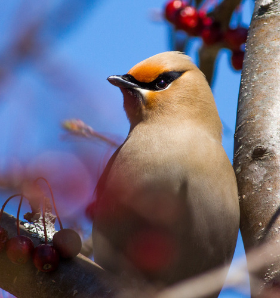

Bohemian Waxwing
Bombycilla garrulus bird

Winter-flocking frugivore that strips berries from saskatoon, highbush-cranberry, hawthorn and rose.
5 documented plant relationships.
Bombycilla garrulus bird

Winter-flocking frugivore that strips berries from saskatoon, highbush-cranberry, hawthorn and rose.
5 documented plant relationships.
 Douglas Goldman, some rights reserved (CC BY-SA), uploaded by Douglas Goldman")
 Tom Norton, some rights reserved (CC BY), uploaded by Tom Norton")
 Tom Norton, some rights reserved (CC BY), uploaded by Tom Norton")
 Sam Kieschnick, some rights reserved (CC BY), uploaded by Sam Kieschnick")